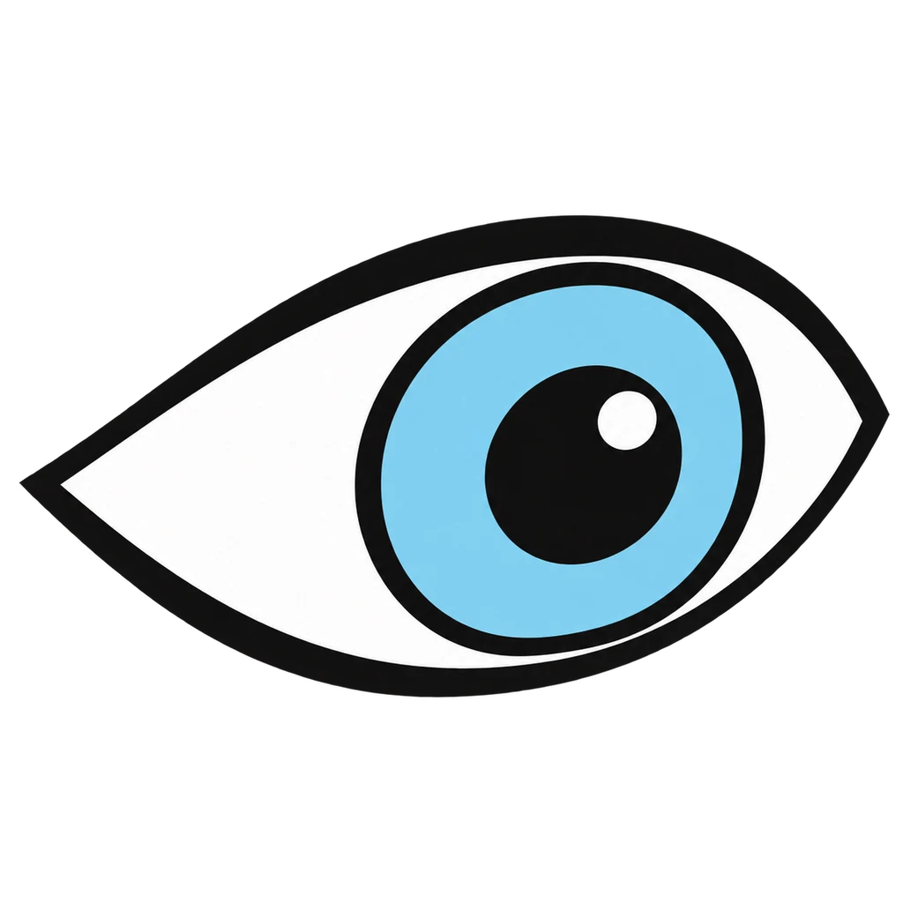
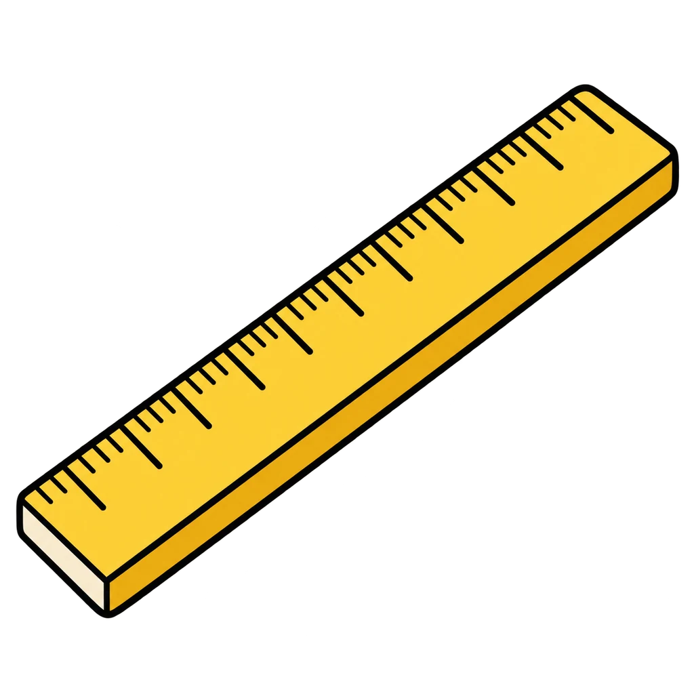
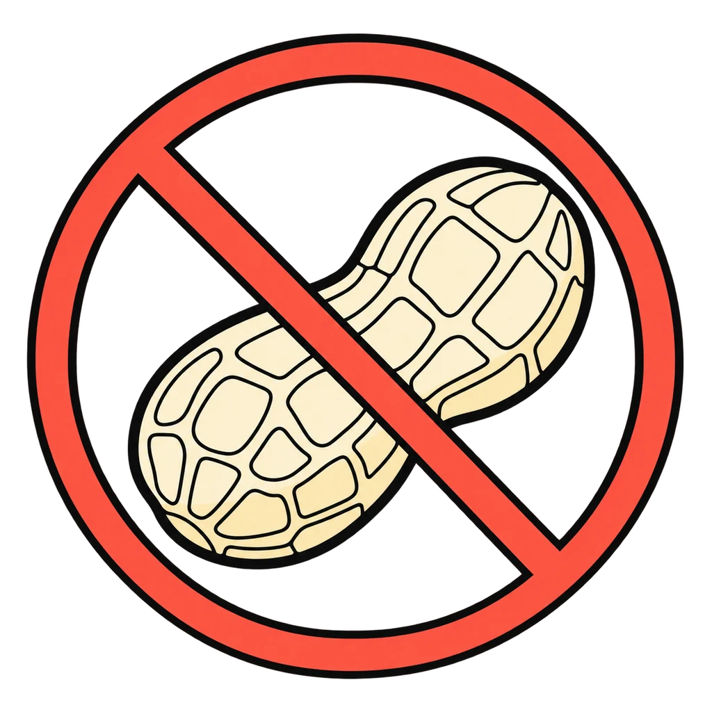
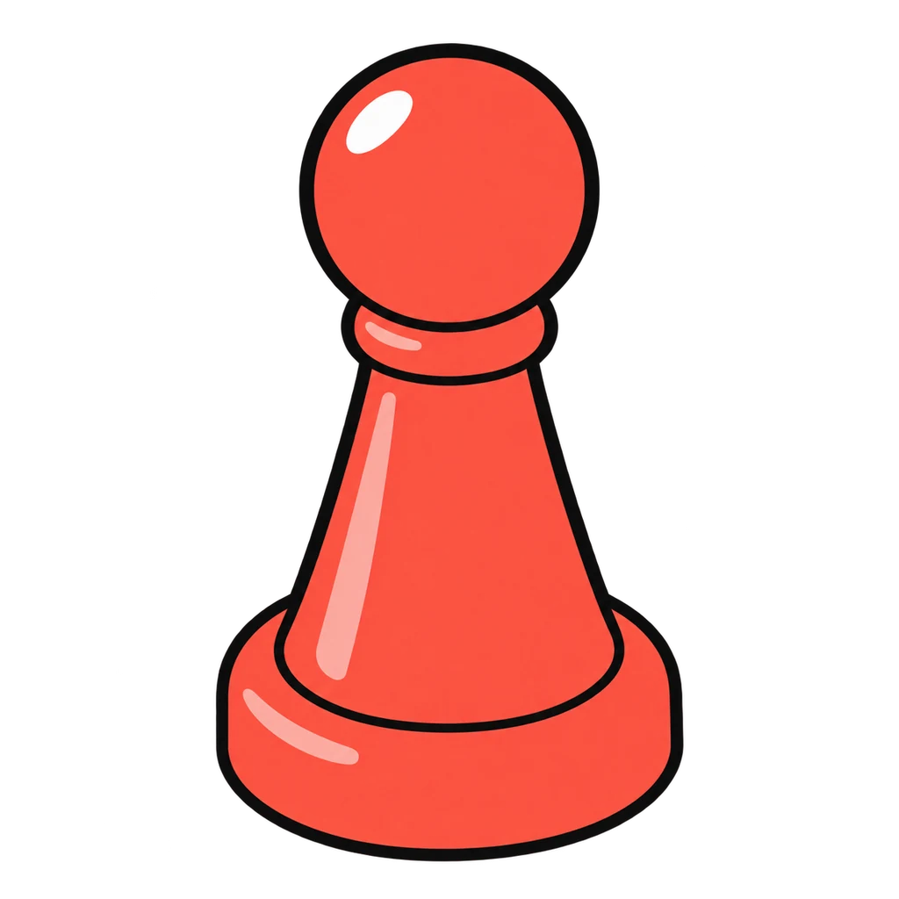

Reviews Lesson 3.3, Lesson 3.4. Myth or Fact reviews Lesson 3.3 (the twelve myth or fact strips) and Lesson 3.4 Day 1 (the everyday heredity, environment, or both sort). Use it in the last five minutes of Lesson 3.4 Day 1 as the warm-up for the quiz, or as the retake review for quiz items 10 and 11. Every miss shows the handout's correction word for word, so the game reteaches the six myths the way the key does. Round 2 accepts the key's second answer on the four items the key marks accept, and the feedback says why both is usually the best answer. Nothing in either round asks about the player.
Myth or Fact
A statement about adolescence appears. Tap MYTH or FACT. Then an everyday item appears with its picture, and you tap H for mostly heredity, E for mostly environment, or B for both.
How to play
- Same age is not the same stage. The range is wide. Late is not wrong.
- The rule: almost everything about a person is both.




Done
The ones to study:
Worth knowing by heart:
- Four things that change in adolescence: body, brain, feelings, independence (Handout 03.03 Part 1)
- The twelve myth or fact statements and the six corrections (Handout 03.03 teacher key)
- What is not just a phase and needs an adult: sadness that does not lift for weeks, not sleeping for days, hurting yourself or someone else, or a friend who says any of those
- Heredity and environment, and why both is the best answer for most items (Handout 03.04 Part 1)